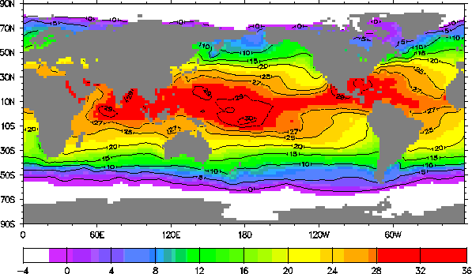

Figure 2: An illustration (for September 1982) of the AMIP monthly-averaged sea-surface temperature (deg C) and sea-ice distribution (white areas) as analyzed from climatological, satellite, and in-situ observations on a 2 deg latitude x 2 deg longitude grid for the period 1979-1988.

Return to Report Table of Contents
Last update May 1, 1996. For further information, contact Larry Gates ( gates5@llnl.gov)
LLNL Disclaimers
UCRL-ID-111532 Rev1